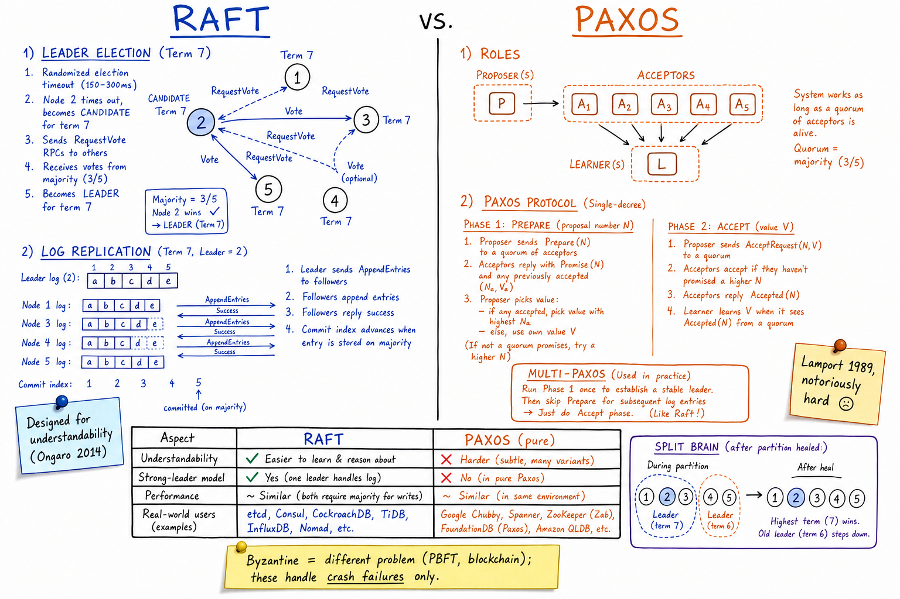

Raft vs Paxos // Stretch
Consensus = N nodes agree on a value despite crashes. Foundation of every CP system (etcd, Spanner, Kafka KRaft, CockroachDB). Paxos came first and is hard; Raft was designed to be understandable. Both are equivalent in power.

Side-by-side: Raft leader election + log replication; Paxos proposer/acceptor roles + prepare/accept phases; Multi-Paxos optimization; split-brain after partition heal; comparison table.
01 — The Problem
You have N replicas of a state machine (say, a key-value store). Clients send commands. The replicas must apply the same commands in the same order, even though some can crash, the network can delay or drop messages, and clocks can drift. That's consensus — the deepest problem in distributed systems.
FLP impossibility (1985): in a fully asynchronous model with even one crash failure, no deterministic consensus protocol can guarantee both safety and liveness. Real protocols (Raft, Paxos) sidestep this by adding timeouts (giving up liveness during partitions) while preserving safety always.
02 — Core Vocabulary
| Term | Meaning |
|---|---|
| Consensus | All non-faulty nodes agree on a single value. |
| Quorum | Subset large enough to make a decision; usually majority of N (= floor(N/2)+1). |
| Leader | Single node that drives the protocol for a period (Raft term, Paxos ballot). |
| Term / Epoch / Ballot | Monotonically-increasing number identifying a leader's reign. |
| Log entry | (index, term, command) tuple appended to replicated log. |
| Commit index | Highest log index known to be replicated on a majority. |
| Safety | Nothing bad happens (no two committed values disagree). |
| Liveness | Something good eventually happens (a commit succeeds). |
| Linearizability | Strongest consistency: every op appears to occur at a single instant between its call and return. |
| Crash-fault tolerance | Tolerates nodes crashing or going silent. Most protocols here. |
| Byzantine fault tolerance | Tolerates arbitrary / malicious behavior. Different problem (PBFT, blockchain). |
03 — Raft Overview
Ongaro & Ousterhout, USENIX 2014. The design goal was understandability. Two big mechanisms:
- Leader election — randomized timeouts elect a single leader per term.
- Log replication — leader receives commands, replicates to followers, commits on majority ack.
Roles: every node is one of {Leader, Follower, Candidate}. Followers wait for AppendEntries from the leader; if they don't hear in election_timeout (randomized 150-300ms), they become Candidates and start an election. Single leader per term simplifies everything.
04 — Raft: Leader Election
Each node has:
current_term (persistent)
voted_for (persistent)
log[] (persistent)
Election timer: random 150-300ms, reset on receiving valid msg from leader.
When follower's timer fires (no heartbeat heard):
current_term += 1
voted_for = self
state = Candidate
send RequestVote(term, last_log_index, last_log_term) to all peers
On RequestVote:
if RPC term > my term: become follower, update term
grant vote IFF:
candidate's term ≥ mine AND
voted_for in {null, candidate} AND
candidate's log is at least as up-to-date as mine
reset election timer on granting
Candidate wins if it receives majority votes for current_term:
becomes Leader, sends heartbeat AppendEntries(empty)
Split vote: no candidate gets majority -> timer fires again with new term.
Randomized timeouts make split votes rare.
05 — Raft: Log Replication
Leader's flow on each client command:
1. Append entry to own log: (index = next, term = current_term, cmd)
2. Send AppendEntries(prev_log_index, prev_log_term, entries[], leader_commit)
to each follower
3. Follower checks prev_log_index/term matches (LOG MATCHING) and appends
4. When entry is on a majority -> leader sets commit_index to that entry
5. Leader applies to state machine; replies success to client
6. Followers see leader_commit go up -> apply to their state machines
Follower log doesn't match? AppendEntries rejected.
Leader decrements its idea of follower's next_index and retries.
Eventually leader overwrites follower's stale tail with its own.
Persistent state survives crashes: current_term, voted_for, log[].
Volatile leader state: next_index[], match_index[] per follower.
06 — Raft Safety Properties
| Property | Meaning |
|---|---|
| Election Safety | At most one leader per term. |
| Leader Append-Only | A leader never overwrites or deletes entries in its own log. |
| Log Matching | If two logs contain an entry with the same index + term, all earlier entries are identical. |
| Leader Completeness | If an entry was committed, every future leader contains it. |
| State Machine Safety | If a node applies entry at index i, no other node applies a different entry at index i. |
The election restriction (vote only if candidate's log is at least as up-to-date) is what makes Leader Completeness hold — you can't elect a leader missing committed entries.
07 — Paxos Overview
Lamport's Paxos (1989, paper 1998). Solves single-decree consensus: one round agrees on one value. Roles: Proposer, Acceptor, Learner (one process plays many).
PHASE 1 (Prepare):
Proposer picks proposal number n (must be globally unique, monotonic)
Sends Prepare(n) to a quorum of Acceptors
Acceptor that has not promised > n:
promises not to accept proposals < n
returns highest (n_a, v_a) it has accepted (if any)
PHASE 2 (Accept):
Proposer picks value v:
if any Acceptor returned (n_a, v_a) -> use v_a with highest n_a
else -> pick any value (e.g., the original client request)
Sends Accept(n, v) to a quorum
Acceptor accepts IFF it hasn't promised > n
If quorum accepts -> value v is CHOSEN.
Learners learn the chosen value.
Safety property: once a value is chosen, no other value can be chosen for that instance. The two-phase structure ensures that any new proposal either picks up an already-chosen value or learns there wasn't one.
08 — Multi-Paxos (used in practice)
Single Paxos = one decree. For a replicated log we need many decrees. Naive: run full Paxos per log slot -> 2 round trips per command. Multi-Paxos optimization: - Elect a stable LEADER via one Paxos instance - Leader skips Phase 1 for subsequent log slots in its term - Leader broadcasts Accept(n, v) directly for each new command - Resembles Raft's log replication, but with weaker "leader" semantics This is what Google Chubby and Spanner use under the hood. So in practice: Raft = Multi-Paxos rewritten for understandability, with stricter leader rules.
09 — Variants
| Variant | Idea | Real users |
|---|---|---|
| Multi-Paxos | Stable leader skips Phase 1 | Google Chubby, Spanner, Megastore |
| Raft | Strong leader, designed for understandability | etcd, Consul (raft K/V), CockroachDB, TiKV, MongoDB (since 3.2) |
| Zab | Paxos-family, atomic broadcast | ZooKeeper |
| EPaxos | Leaderless; commands committed in 1 RTT if no conflicts | Research / niche |
| Flexible Paxos | Phase 1 + Phase 2 quorums can be sized differently (intersect) | Performance research |
| Viewstamped Replication | Older cousin of Paxos, primary-driven | Largely academic |
10 — Byzantine vs Crash Fault Tolerance
Raft and Paxos assume crash failures: nodes either work correctly or stop. They do not handle malicious/Byzantine behavior.
Crash fault tolerance (CFT): Tolerate f failures with 2f + 1 nodes 3 nodes -> tolerate 1 failure 5 nodes -> tolerate 2 failures Used by: Raft, Paxos, Zab Byzantine fault tolerance (BFT): Tolerate f Byzantine failures with 3f + 1 nodes 4 nodes -> tolerate 1 Byzantine 7 nodes -> tolerate 2 Used by: PBFT (Castro & Liskov), Tendermint, HotStuff, blockchain consensus Blockchain twist: Bitcoin/Ethereum use Nakamoto consensus (probabilistic) + cryptographic puzzles PoS chains use BFT variants (HotStuff in Diem, Tendermint in Cosmos)
Almost no enterprise system needs BFT — mutual TLS + authenticated identities make Byzantine attacks costly enough to model out.
11 — Partitions & Split Brain
5-node cluster splits 3 + 2:
Majority side (3 nodes):
- Can still elect leaders, commit entries (3 / 5 = majority)
- Continues serving writes
- Term increments naturally
Minority side (2 nodes):
- Cannot reach majority -> no leader can be elected
- Old leader on this side eventually steps down (loses contact)
- Writes time out
When partition heals:
- Old leader on minority side discovers higher term from peers
- Reverts to follower, truncates conflicting log entries
- Catches up to new leader's log
-> safety preserved by Leader Completeness
KEY INSIGHT: with a majority requirement, only ONE side can make progress.
Split brain (two active leaders both committing) cannot happen by construction.
12 — Where It Shows Up
| System | Protocol |
|---|---|
| etcd | Raft (canonical implementation) |
| ZooKeeper | Zab (Paxos-family) |
| Distributed KV store | Spanner uses Paxos groups; CockroachDB uses Raft per range |
| Payment System | Any strongly-consistent ledger uses CFT consensus underneath |
| Kafka (KRaft) | Kafka's ZK replacement — controller quorum runs Raft |
| MongoDB | Raft for replica-set election & oplog (since 3.2) |
| Consistency Models | Linearizability requires consensus on order |
| CAP / PACELC | Consensus = CP corner |
13 — Pitfalls
- Even-numbered cluster — 4-node cluster tolerates the same f=1 as 3-node but with more split-vote risk. Always odd (3, 5, 7).
- Cross-region quorum — every commit waits for a majority across regions. Latency floor = cross-region RTT.
- Disk fsync ignored — the protocol assumes persisted state survives crashes. Forget fsync, lose safety.
- Leader churn — aggressive election timeouts cause flapping. Tune relative to network RTT.
- Snapshotting forgotten — log grows forever; need periodic snapshots + log truncation.
- Single Raft for entire dataset — doesn't scale; partition into many Raft groups (CockroachDB ranges, TiKV regions).
- Naive linearizable reads — a read must go through the log or a leader lease, otherwise you can read stale state from a deposed leader.
- Mixing crash-fault and BFT — if you need Byzantine tolerance, Raft alone won't save you.
14 — Interview Q&A
What problem does consensus solve?
What's the difference between Raft and Paxos?
Walk me through Raft leader election.
How does Raft replicate a log entry?
Why does Raft need quorum (majority)?
What is the FLP impossibility result?
What's Multi-Paxos and why does it matter?
Can two leaders ever exist simultaneously?
What's Byzantine fault tolerance and when do you need it?
How do you do a linearizable read with Raft?
Why does Spanner use Paxos and not Raft?
SDE-2 vs SDE-3 differentiator?
| SDE-2 | SDE-3 |
|---|---|
| "etcd uses Raft for consensus" | + Raft election + log replication explained, the 5 safety properties, quorum math, Multi-Paxos optimization, Zab vs Raft vs Paxos, BFT vs CFT (3f+1 vs 2f+1), linearizable read techniques (no-op, lease, read index), partition + split-brain reasoning, multi-Raft for sharding, FLP impossibility |